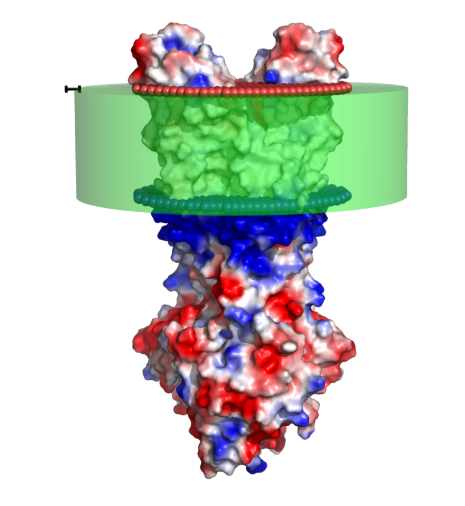
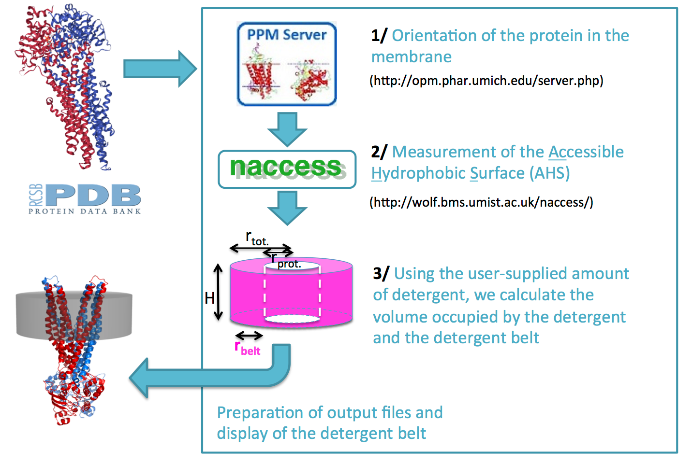

Tutorial Page
The Det.Belt server allows you to have a broad idea of the detergent belt around your membrane protein. The detergent is represented as a transparent hollow cylinder around the hydrophobic region of the protein. This approximation is particularly fitted to biochemical studies to give an overall idea of what is expected around your membrane protein of interest.
The server performs the following steps to reach the creation of the detergent belt, as described in
Quantification of Detergents Complexed with Membrane Proteins. Chaptal V, Delolme F, Kilburg A, Magnard S, Montigny C, Picard M, Prier C, Monticelli L, Bornert O, Agez M, Ravaud S, Orelle C, Wagner R, Jawhari A, Broutin I, Pebay-Peyroula E, Jault JM, Kaback HR, le Maire M, Falson P. Sci Rep. 2017 Feb 8;7:41751.
2 Using the oriented PDB, we calculate the Accessible Hydrophobic Surface (AHS) using the program naccess and a sphere of 1.5 Å radius. This metric is useful in two ways; first it allows us to draw the graph volume_occupied_by_the_detergent = ƒ(hydrophobic area(AHS)). Second, this graph can be used to predict how many detergent molecules are around the membrane protein of interest. This is being implemented and should be available shortly.
3 Calculation of the detergent belt as a cylinder. This approximation is based on the neutron diffraction of crystals showing the detergent as a taurus surrounding membrane proteins, and more recent Cryo-EM images also showing the detergent belt. A hollow cylinder is a good approximation of the detergent belt, with the ease and speed of calculations.
- We estimate the membranous part of the protein as a cylinder. The radius of this (inner) cylinder is calculated by averaging all the distances from the center of the protein to the lipid facing parts of the protein, across the whole membrane thickness.
- The volume occupied by the detergent belt is calculated as the sum of the volumes occupied by single detergents. For example, 400 DDM represent a volume of 400 x 453 Å 3 (volume of DDM) = 181,200 Å 3.
- The cylinder is represented using all the information gathered in the steps described above and shown in the joint figure.
Representation of the server side detergent belt generation process

Finally, the detergent belt is represented as a hollow cylinder around the membrane protein, with the Web GL viewer ngl (
AS Rose, AR Bradley, Y Valasatava, JM Duarte, A Prlić and PW Rose. Web-based molecular graphics for large complexes. ACM Proceedings of the 21st International Conference on Web3D Technology (Web3D '16): 185-186, 2016. ) allowing users to move the protein, and to represent it in cartoon mode or as electrostatic potential surface.
The metrics used in the calculation are output in a table bellow the viewer.
The user has access to a graph representing the
volume_occupied_by_the_detergent=f(hydrophobic area(AHS)), with the user value highlighted, useful to gage how the request distributes among other data available in the literature.
High quality figures can be generated via the program Pymol using premade scripts that can be downloaded using the download buttons on the top-right of the page.